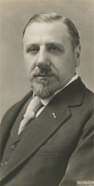
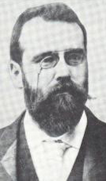
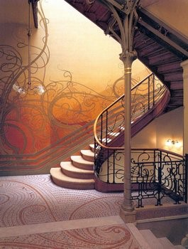
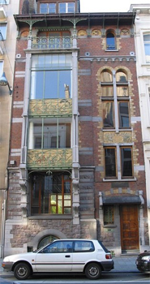
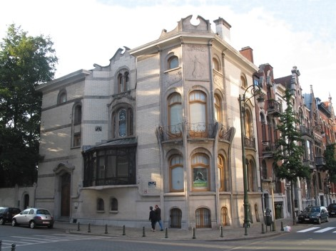
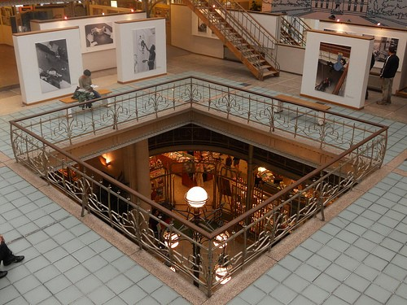
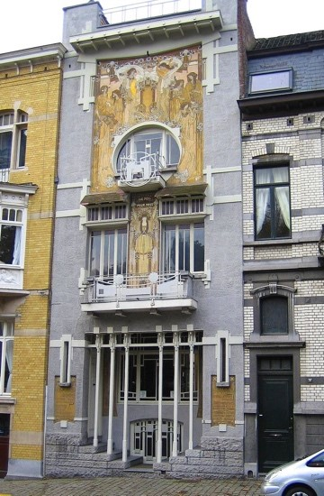

Victor HORTA
1861 - 1947
www.hortamuseum.be
Durant notre séjour de 4 jours, nous vous proposons de découvrir au travers des villes qui ont participées au développement du mouvement de l’Art nouveau, Bruxelles et Nancy, de retracer le parcours d’un art et d’un univers incroyable ; C’est pour cela que Art&Culture se met à votre disposition afin de vous faire découvrir à travers cet avant-goût, ce que cette expédition culturelle unique peut vous offrir.
BRUXELLES : Les maîtres de l'Art nouveau
Au tournant des XIXè et XXè siècles, Bruxelles connaît une effervescence sans pareille. Une nouvelle bourgeoisie, constituée d'industriels, de commerçants, de professions libérales… souhaite créer une identité propre à cette ère industrielle et donc loin des styles passés, de l’art de la cour. L’Art nouveau nait donc en 1893 et est lancé par Victor HORTA et Paul HANKAR. Ces derniers sont considérés comme étant les pionniers de ce nouvel art grâce à la construction de l’hôtel Tassel et la maison personnelle de Hankar qui sont les premiers signes d'une nouvelle esthétique. Trois types de motifs prédominent cet art : l'arabesque, la plante ou l'animal et la silhouette féminine. Au tournant du siècle, sous l'influence de la Sécession viennoise, les formes ont tendance à se géométriser, les combinaisons de cercles et de carrés sont fréquentes.
|

|

|
Pour l'un des philosophes espagnols engagés dans pleins de domaines mais aussi l'art du XXè siècles, José ORTEGA Y GASSET, « L’art nouveau à la masse contre lui et il l’aura toujours. Il est impopulaire par essence ; plus encore, il est antipopulaire. Quelle que soit l’œuvre qu’il engendre, elle produit automatiquement dans le public un curieux effet sociologique. Elle le divise en deux parties : l’une, minime, formée par un nombre réduit de personnes qui lui sont favorables ; l’autre, majoritaire, innombrable, qui lui est hostile. ».
Bruxelles est aujourd'hui considérée la Capitale de l'Art nouveau. C’est une ville pleine de surprises. Malheureusement, de nombreux immeubles d'Art nouveau n’ont pas survécus à l'urbanisme moderne des années 1960-1970.
Dès lors pour cette première étape du circuit, il est indispensable de commencer par la découverte des deux premières maisons en style Art nouveau qui furent construites à Bruxelles. Par conséquent le premier jour, nous vous conseillons le Musée d’Horta et la Maison Hankar.
|

|

|
La maison privée et l'atelier de Victor HORTA devenu « Le Musée d’Horta » est reconnu « Patrimoine Mondial de l’humanité » par l’UNESCO. Ce dernier était autrefois la demeure de Victor HORTA et fut également construite par lui de 1898 à 1901. L’escalier principal est considéré comme étant l’axe central de cette construction.
Enfin, à quelques mètres du Musée d'Horta, à l'angle de l'avenue Brugmann, se trouve un remarquable hôtel de maître que vous pourrez visiter afin de finaliser cette journée ; L'Hôtel Hannon, mêlé d'influences éclectiques pour la décoration intérieure et construit par Edouard HANNON de 1903 à 1904.
|

|
Le deuxième jour, nous vous proposons de visiter le Musée de la Bande Dessinée autrefois appelé « magasins Waucquez ». Ce dernier est magnifié par un exceptionnel cadre Art nouveau conçu également par Victor HORTA.
|

|
Afin de finir votre séjour à Bruxelles en beauté, nous vous proposons de découvrir « La Maison Cauchie ». Elle considérée comme l’une des plus belles œuvres de l’Art nouveau et a été édifiée en 1905 par l’architecte Paul CAUCHIE. Cette maison comporte de nombreux éléments décoratifs exceptionnel donc les fameux graffities de l’Art nouveau.
|

|